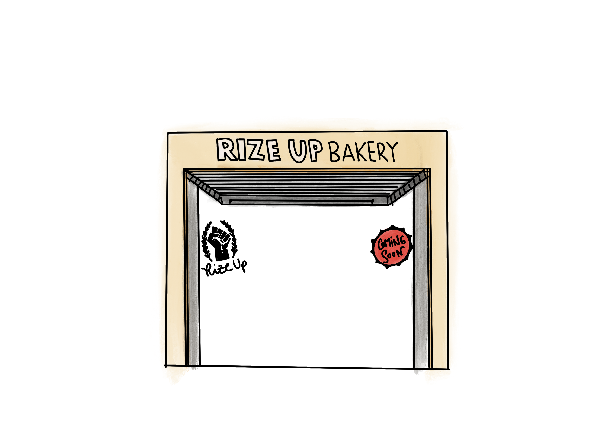
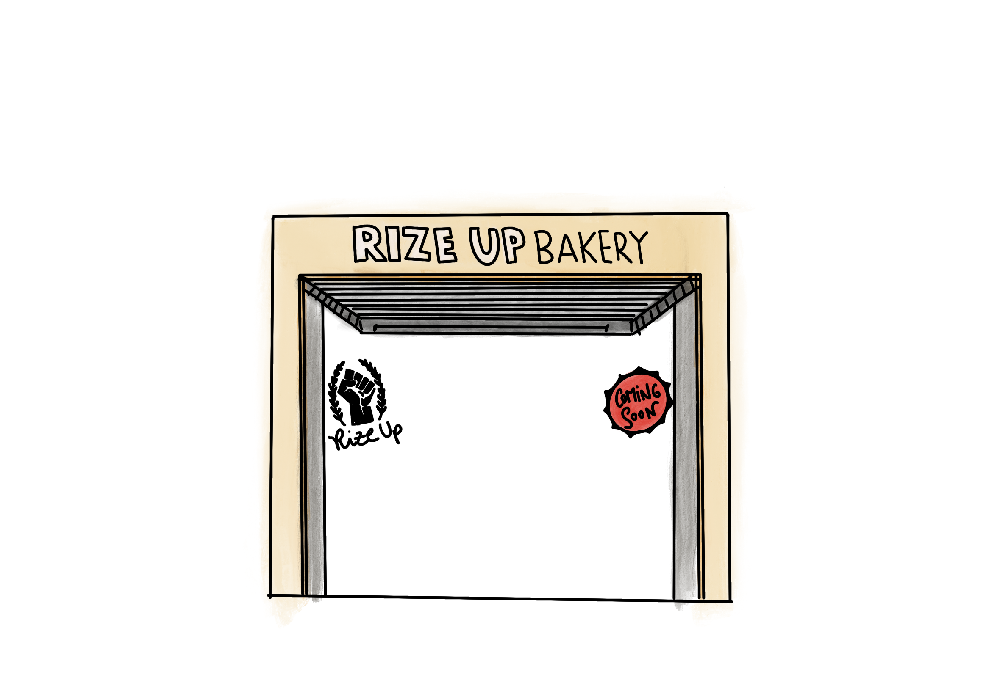

SF Bakeries & Storytelling
Capturing post-pandemic resilience and community in San Francisco's bakeries.
Time Frame
Winter 2025
Location
San Francisco, CA
Role
Visual Storyteller · Reporter · Designer
Team
Beatriz, Zoe & Laura
Tools
Overview
As part of the Bay Area Immersion Program, I partnered with two fellow students to document the cultural, economic, and emotional stories behind SF’s post-pandemic bakery boom. Over 6 weeks, we built a fully original storytelling site from scratch — including concept, reporting, photography, illustrations, UX design, interviews, and final production.
What does it mean to rebuild community one loaf of bread at a time?
We interviewed bakery owners, visited their shops in person, and created an immersive digital story with original animations, visual identity, and longform narrative. We designed everything from scratch — from typography to code — and built an interactive experience for readers to explore a side of SF rarely shown in glossy tech stories.
Read the full storyPhotojournalism & Visuals

 



Reflections
This was one of the most creatively fulfilling projects I’ve ever worked on. I was able to merge design, storytelling, code, photography, and community listening into a single immersive experience. It taught me the power of food as a lens for journalism — and how deeply design can shape empathy.
We didn't just tell a story. We created an environment to experience one. From hand-coded scroll animations to delicate color grading, every detail was intentional. I left this project more confident in my creative instincts, collaboration skills, and ability to bring ideas to life.